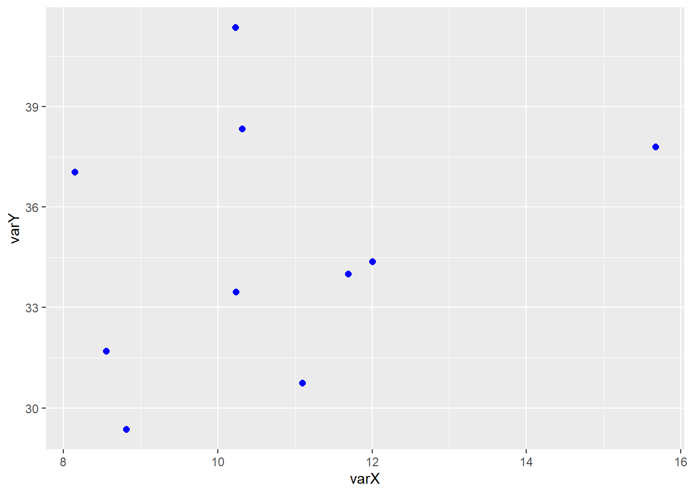
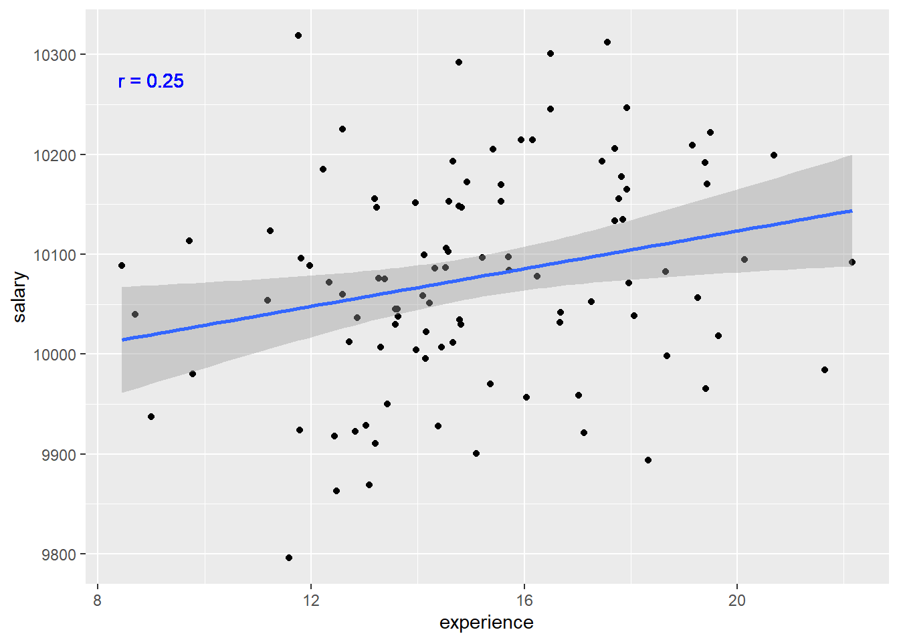
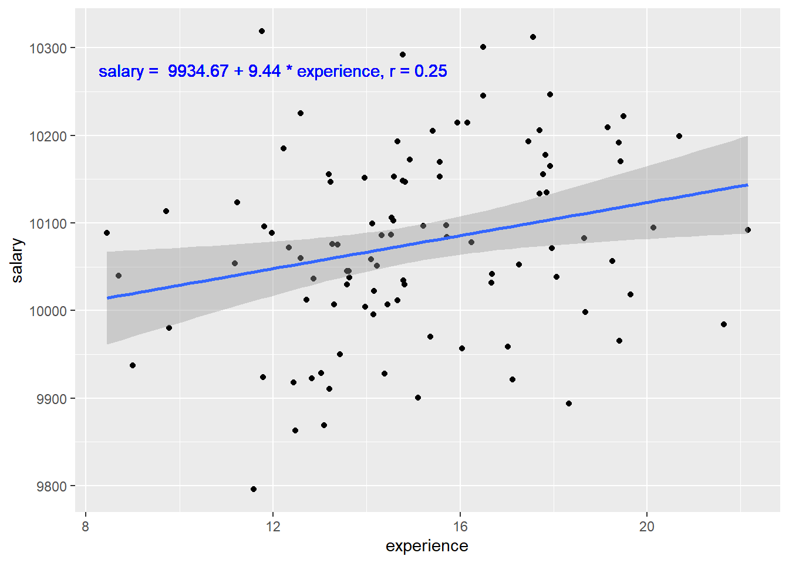
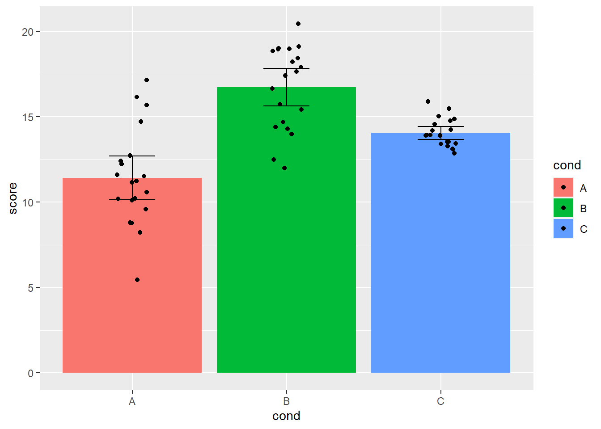
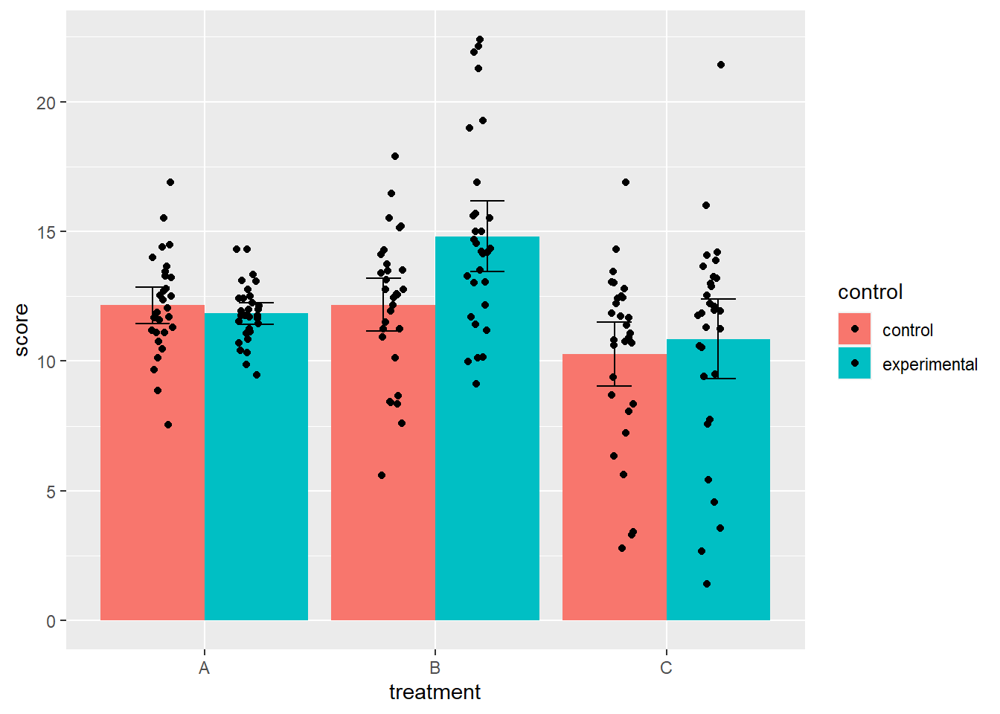
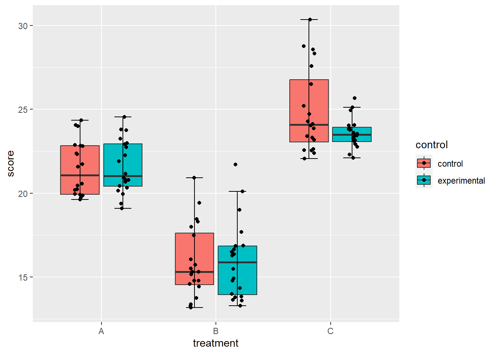
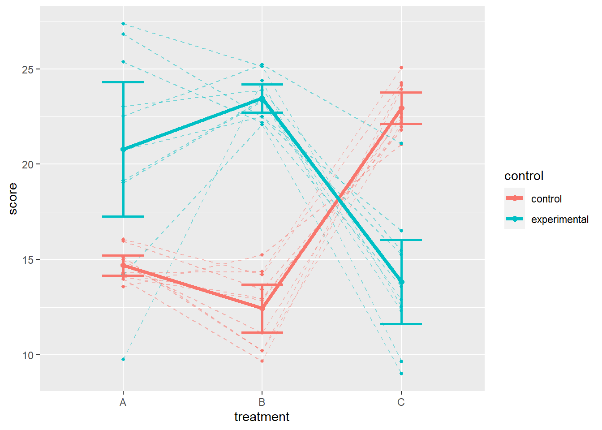
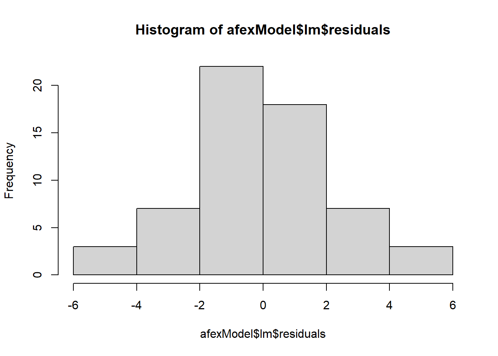
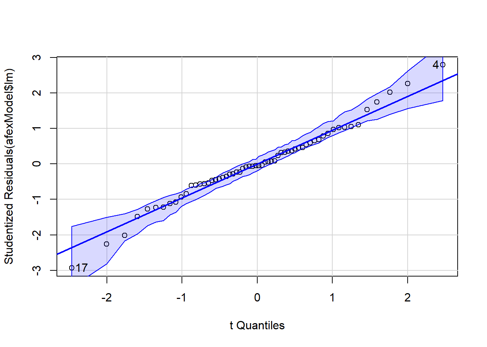

QuatroTest
contact: J.J.vanNijnatten@uva.nl
broncode: https://github.com/jonasvannijnatten/PB_statistiek
laatste update: 11-06-2024
Other R manuals for Psychobiology: https://jonasvannijnatten.github.io/PB_statistiek/
1 Software
1.1 Versies
software versies gebruikt voor deze handleiding:
- R version 4.3.1 (2023-06-16 ucrt)
- ggplot2 versie: 3.4.4, 2023-10-11
- Hmisc versie: 5.1.1, 2023-09-11
- knitr versie: 1.44, 2023-09-08
1.2 Installatie
Benodigde packages installeren & activeren:
reqPacks = c(
"markdown",
"knitr",
"kableExtra",
"Hmisc",
"ggplot2",
"car",
"ez",
"afex")
if (!require("pacman")) install.packages("pacman")
pacman::p_load(reqPacks, character.only = TRUE)2 Opbouw van figuren met GGplot2 package
De figuren worden met het GGPlot2 package opgebouwd volgens een bepaalde grammatica van figuren die figuren opdeelt in meerdere lagen. De essentiele lagen zijn Data, Aesthetics en Geometries.
- Data: Dit zijn de datapunten die je wilt gaan visualizeren
- Aes: Dit bepaald welke data met welke assen, subplots, kleuren of symbolen wordt weergegeven.
- Geom: Dit bepaald in welke vorm de data wordt weergegeven (lijnplot, barplot, boxplot etc.)
De eerste stap is het definieren van de Data en Aesthetics met de functie ggplot() en aes().
myData = data.frame(varX=rnorm(10,10,2), varY=rnorm(10,35,5))ggplot(myData, aes(x=varX, y=varY))Dit opent een nieuw figuur waarin de data uit myData komt, en varX op de x-as zal komen, en varY op de y-as zal komen. Er is echter nog niets geplot omdat we nog niet hebben aangegeven hoe de plot eruit moet komen te zien.
De volgende stap is het toevoegen van geometries met behulp van een van de geom_…() functies, bijv. geom_point().
ggplot(myData, aes(x=varX, y=varY)) + geom_point(col="blue", size=2)
Dit figuur kan worden uitgebreid door er meer Geometries aan toe te voegen zoald bijvoorbeel lijnen (geom_line()). Daarnaast zijn de eigenschappen van de verschillende geoms individueel aan te passen, zoals bijvoorbeeld kleur een grootte. De volgorde waarin de geoms in de code staan is de volgorde waarin ze worden getekend, met de laatste als bovenste laag. In dit figuur zijn bijvoorbeeld de lijnen over de punten heen getekend. Door de volgorde van geom_point() en geom_line() om te draaien worden de punten over de lijn heen getekend.
Voor een mooi overzicht en toelichting van alle mogelijkheden van het ggplot2 package zie:
https://ggplot2.tidyverse.org/reference/
ggplot(myData, aes(x=varX, y=varY)) + geom_point(col="blue", size=4) + geom_line(col="green", size=1.2)Warning: Using `size` aesthetic for lines was deprecated in ggplot2 3.4.0.
ℹ Please use `linewidth` instead.
Uitleg van de grammatica van figuren:
Uitleg van de lagen waaruit een figuur is opgebouwd:
3 Voorbeelden
3.1 T-test
Toon code om voorbeeld data te genereren
# generate data
N = 40
ID = 1:N
group1 = rnorm(n = N, mean = 25, sd = 6.5)
group2 = rnorm(n = N, mean = 35, sd = 6.5)
data.wide = data.frame(ID,group1, group2)
# reshape data
data.long = reshape(data = data.wide,
direction = "long"
, varying = c("group1", "group2")
, v.names = "score"
, times = c('pre', 'post')
, idvar = 'ID'
, new.row.names = NULL
)
# set variable time as a factor
data.long$time = factor(data.long$time, levels = c("pre","post"))| ID | time | score |
|---|---|---|
| 1 | pre | 13.34726 |
| 2 | pre | 29.40235 |
| 3 | pre | 27.07303 |
| 4 | pre | 25.57118 |
| 5 | pre | 21.35547 |
| 1 | post | 40.79999 |
| 2 | post | 30.02379 |
| 3 | post | 31.49931 |
| 4 | post | 39.37973 |
| 5 | post | 46.95439 |
# plot means and standard deviations
ggplot(data.long, aes(x=time, y=score, fill=time) ) +
# plot de gemiddeldes voor iedere conditie als bargraph
stat_summary ( geom = "bar", fun = "mean" ) +
# voeg errobars toe aan de bargraph
geom_errorbar( stat = "summary", fun.data = "mean_sdl", fun.args = 1, width = 0.3 ) +
# plot alle individuele datapunten
geom_point ( position=position_jitter(width = .2, seed=1) )
Om de standaardfout (standard error) weer te geven i.p.v. de standaardafwijking (standard deviation) kan bij het argument fun.data de functie “mean_sdl” vervangen worden met “mean_se”. Om de gebruikelijke 2 maal de standaardfout te plotten (of 1.96 om nauwkeuriger te zijn) om het 95% betrouwbaarheidsinterval weer te geven moet bij het argument fun.arg = 1 worden vervangen door fun.arg = 2.
geom_errorbar( stat = "summary", fun.data = "mean_se", fun.args = 2, width = 0.3 )Wanneer de data niet normaal verdeeld is dan zijn de gemiddeldes en standaarddeviaties of standdaardfouten geen goede representiatie van de data. In dat geval is het gebruikelijker om de data in een boxplot weer te geven met mediaan en quantielafstanden.
ggplot(data.long, aes(x=time, y=score, fill=time) ) +
# Plot een boxplot, outlier.shape = NA onderdrukt het plotten van de outliers
# Dit doen we omdat geom_points() alle datapunten al plot)
geom_boxplot(outlier.shape = NA) +
# voegt 'errorbars' aan het einde van de whiskers toe
stat_boxplot(geom="errorbar", width=.3) +
# plot alle individuele datapunten
geom_point(position=position_jitter(width=.2,seed = 1))
3.2 Correlatie & Regressie
Wanneer je de relatie tussen twee continue variabelen onderzoekt kun je een correlatie of lineaire regressie analyse gebruiken. Een correlatietoets geeft aan of beide variabelen samenhangen, terwijl een regressie een predictiemodel toetst. In de pratkijk geven beide statistisch gezien hetzelde resultaat maar verschillen ze in de hypothese die je toetst en de conclusies die je kunt trekken. Bij een correlatie is het daarom gebruikelijk om de correlatiecoefficient r te rapporteren, terwijl het bij een regressie gebruikelijk is om de regressie coefficienten (intercept & helling; \(alpha\) en \(beta\)) te rapporteren in de vorm van het predictiemodel.
Toon code om data te genereren
# generate data
set.seed(05)
nrobs = 100
experience = rnorm(n = nrobs, mean = 15, sd = 3)
salary = 10000 + ( 5 * experience ) + rnorm(n = nrobs, mean = 0, sd = 100)
data.long = data.frame(experience, salary)
# calculate correlation coefficient r
corr_coef = cor(x = data.long$experience, y = data.long$salary)| experience | salary |
|---|---|
| 12.47743 | 9862.848 |
| 19.15308 | 10209.297 |
| 11.23352 | 10123.747 |
| 15.21043 | 10096.900 |
| 20.13432 | 10094.887 |
Correlatieplot:
ggplot(data = data.long, aes(x = experience, y = salary)) +
geom_point() + # plot the datapoints
# add a linear regression line with 95% confidence interval
geom_smooth(method='lm', formula = 'y ~ x', se=TRUE, level=0.95) +
# plot the correlation coefficient into to figure
geom_text(x = 9, y = 10275, color="blue",
label = paste("r =", as.character(round(corr_coef,3))))
Regressieplot:
# apply linear regression and obtain regression coefficients
lin_mod = summary(lm(data = data.long, formula = salary~experience))
alpha = round(lin_mod$coefficients[1],2)
beta = round(lin_mod$coefficients[2],2)
corr_coef = round(sqrt(lin_mod$r.squared),3)
# create figure
ggplot(data = data.long, aes(x = experience, y = salary)) +
geom_point() + # plot the datapoints
# add a linear regression line with 95% confidence interval
geom_smooth(method='lm', formula = 'y ~ x', se=TRUE, level=0.95) +
# plot the correlation coefficient into to figure
geom_text(x = 12, y = 10275, color="blue",
label = paste("salary = ", alpha, "+", beta,"*","experience, r =",corr_coef))
3.3 One-way independent samples ANOVA
Toon code om voorbeeld data te genereren
set.seed(05) # set seed
nrofconds = 3 # set number of conditions
nrofsubs = 20 # set number of subjects
subj = as.factor(1:(nrofsubs*nrofconds)) # create array with subject IDs
cond = as.factor(rep(LETTERS[1:nrofconds],each=nrofsubs)) # create array with condition values
score = as.vector( replicate(
nrofconds , rnorm(n = nrofsubs, mean = sample(8,1)+10 , sd = sample(5,1) )
) ) # create array with measurement values
data.long = data.frame(subj, cond, score); # combine arrays into a data.frame
rm(list=setdiff(ls(), c("data.long", "nrofsubs","nrofconds"))) # delete arrays| subj | cond | score |
|---|---|---|
| 1 | A | 16.153078 |
| 2 | A | 8.233524 |
| 21 | B | 18.935924 |
| 22 | B | 17.413522 |
| 41 | C | 15.895668 |
| 42 | C | 13.543431 |
ggplot(data.long, aes(x=cond, y=score, fill=cond) ) +
stat_summary ( geom = "bar", fun = "mean" , position = "dodge") +
geom_errorbar( stat = "summary", fun.data = "mean_se", fun.args = 2, width = 0.3 ) +
geom_point ( position=position_jitter(width = .1) )
3.4 Factorial independent samples ANOVA
Toon code om voorbeeld data te genereren
set.seed(01) # set seed
nrofcondsf1 = 3 # set number of conditions for factor 1
nrofcondsf2 = 2 # set number of conditions for factor 2
nrofsubs = nrofcondsf1*nrofcondsf2*30 # set number of subjects per condition
subj = as.factor(1:(nrofsubs)) # create array with subject IDs
# create array witht treatment conditions
treatment = as.factor(rep(LETTERS[1:nrofcondsf1],each=nrofsubs/nrofcondsf1))
# create array with control / experimental
control = as.factor(rep(c("control","experimental"),times=nrofsubs/nrofcondsf2))
# create array with measurement values
score = as.vector( replicate(nrofcondsf1, replicate (
nrofcondsf2 , rnorm(
n = (nrofsubs/(nrofcondsf1*nrofcondsf2)),
mean = 0 , sd = sample(5,1) ) + sample(8,1)+10
) ) )
# combine arrays into a data.frame
data.long = data.frame(subj, score, treatment, control);
# delete unnecessary arrays
rm(list=c("control","nrofcondsf1","nrofcondsf2","nrofsubs","score","subj","treatment"))| subj | score | treatment | control |
|---|---|---|---|
| 1 | 11.673767 | A | control |
| 2 | 13.329799 | A | experimental |
| 61 | 13.484527 | B | control |
| 62 | 10.149803 | B | experimental |
| 121 | 10.811829 | C | control |
| 122 | 7.591698 | C | experimental |
ggplot(data.long, aes(x=treatment, y=score, fill=control) ) +
stat_summary ( geom = "bar", fun = "mean" , position = "dodge") +
geom_errorbar( stat = "summary", fun.data = "mean_se", fun.args = 2, width = 0.3,
position = position_dodge(width=.9) ) +
geom_point ( position = position_jitterdodge(jitter.width = .2) )
Toon code om voorbeeld data te genereren
set.seed(01) # set seed
nrofcondsf1 = 3 # set number of conditions for factor 1
nrofcondsf2 = 2 # set number of conditions for factor 2
nrofsubs = nrofcondsf1*nrofcondsf2*20 # set number of subjects per condition
subj = as.factor(1:(nrofsubs)) # create array with subject IDs
# create array witht treatment conditions
treatment = as.factor(rep(LETTERS[1:nrofcondsf1],each=nrofsubs/nrofcondsf1))
# create array with control / experimental
control = as.factor(rep(c("control","experimental"),times=nrofsubs/nrofcondsf2))
# create array with measurement values
score = as.vector( replicate(nrofcondsf1, replicate (
nrofcondsf2 , rchisq(
n = (nrofsubs/(nrofcondsf1*nrofcondsf2)),
df = 3)
)+ sample(14,1)+10 ) )
# combine arrays into a data.frame
data.long = data.frame(subj, score, treatment, control);
# delete unnecessary arrays
rm(list=c("control","nrofcondsf1","nrofcondsf2","nrofsubs","score","subj","treatment"))ggplot(data.long, aes(x=treatment, y=score, fill=control) ) +
geom_boxplot (outlier.shape = NA) +
stat_boxplot(geom="errorbar", width=.3, position = position_dodge(.75) ) +
geom_point ( position = position_jitterdodge(jitter.width = .2) )
3.5 One-way repeated measures ANOVA
Toon code om voorbeeld data te genereren
# Generate dataset
set.seed(01) # set seed
nrofsubs = 20 # set number of subjects
nrofconds = 3 # set number of conditions
subj = as.factor(rep(1:nrofsubs,nrofconds)) # create array with subject IDs
cond = as.factor(rep(LETTERS[1:nrofconds],each=nrofsubs)) # create array with condition values
score = as.vector( replicate(
nrofconds , rnorm(n = nrofsubs, mean = sample(8,1)+10 , sd = sample(5,1) )
) ) # create array with measurement values
data.long = data.frame(subj, cond, score); # combine arrays into a data.frame
rm(list=c("cond","nrofconds","nrofsubs","score","subj")) # delete arrays| subj | cond | score |
|---|---|---|
| 1 | A | 11.734573 |
| 2 | A | 7.657486 |
| 1 | B | 17.298260 |
| 2 | B | 9.042593 |
| 1 | C | 13.226653 |
| 2 | C | 8.244977 |
ggplot(data.long, aes(x=cond, y=score, group=1, colour=subj)) +
geom_point () +
geom_line ( linetype= "dashed", aes(group=subj) ) +
stat_summary ( geom = "line", fun = "mean" , size=2, colour="black", linetype="solid") +
stat_summary ( geom = "point", fun = "mean" , size=2, colour="black") +
geom_errorbar( stat="summary", fun.data="mean_se", size=1, fun.args = 2, width = 0.3 ) +
guides(color = "none")
3.6 Factorial repeated measures ANOVA
Toon code om voorbeeld data te genereren
set.seed(02) # set seed
nrofcondsf1 = 3 # set number of conditions for factor 1
nrofcondsf2 = 2 # set number of conditions for factor 2
nrofsubs = 10 # set number of subjects
# create array with subject IDs
subj = as.factor(rep(1:(nrofsubs),times=nrofcondsf1*nrofcondsf2))
# create array witht treatment conditions
treatment = as.factor(rep(LETTERS[1:nrofcondsf1],each=nrofsubs*nrofcondsf2))
# create array with control / experimental
control = as.factor(
rep(rep(c("control","experimental"),each=nrofsubs),times=nrofcondsf1))
# create array with measurement values
score = as.vector( replicate(nrofcondsf1,
replicate(nrofcondsf2,
rnorm(n = (nrofsubs), mean = sample(14,1)+10 , sd = sample(5,1)
) ) ) )
# combine arrays into a data.frame
data.long = data.frame(subj, score, treatment, control);
# delete arrays
rm(list=c("control","nrofcondsf1","nrofcondsf2","nrofsubs", "score", "subj", "treatment"))| subj | score | treatment | control |
|---|---|---|---|
| 1 | 15.967884 | A | control |
| 2 | 15.125620 | A | control |
| 1 | 9.755724 | A | experimental |
| 2 | 22.514418 | A | experimental |
| 1 | 13.431712 | B | control |
| 2 | 10.210325 | B | control |
| 1 | 24.383561 | B | experimental |
| 2 | 25.232521 | B | experimental |
| 1 | 21.801232 | C | control |
| 2 | 22.161713 | C | control |
| 2 | 21.093728 | C | experimental |
ggplot(data.long, aes(x=treatment, y=score, group=control, colour=control)) +
geom_point (size=1) +
geom_line (linetype="dashed" ,aes(group=interaction(subj,control)), alpha=.5) +
stat_summary ( geom="line", fun = "mean", size=1.5) +
stat_summary ( geom="point", fun = "mean", size=2) +
geom_errorbar( stat="summary", fun.data="mean_se", size=1, fun.args = 2, width = 0.3) 
4 One-way independent samples ANOVA
Toon code om voorbeeld data te genereren
set.seed(05) # set seed
nrofconds = 3 # set number of conditions
nrofsubs = 20 # set number of subjects
subj = as.factor(1:(nrofsubs*nrofconds)) # create array with subject IDs
condition = as.factor(rep(LETTERS[1:nrofconds],each=nrofsubs)) # create array with condition values
score = as.vector( replicate(
nrofconds , rnorm(n = nrofsubs, mean = sample(8,1)+10 , sd = sample(5,1) )
) ) # create array with measurement values
data.long = data.frame(subj, condition, score); # combine arrays into a data.frame
rm(list=c("subj", "condition","score","nrofconds","nrofsubs")) # delete unnecessary variables| subj | condition | score |
|---|---|---|
| 1 | A | 16.153078 |
| 2 | A | 8.233524 |
| 21 | B | 18.935924 |
| 22 | B | 17.413522 |
| 41 | C | 15.895668 |
| 42 | C | 13.543431 |
4.1 Checking assumptions
Test assumption of normality
by(data = data.long$score, INDICES = data.long$condition, FUN = shapiro.test)data.long$condition: A
Shapiro-Wilk normality test
data: dd[x, ]
W = 0.9637, p-value = 0.6201
------------------------------------------------------------
data.long$condition: B
Shapiro-Wilk normality test
data: dd[x, ]
W = 0.92868, p-value = 0.1456
------------------------------------------------------------
data.long$condition: C
Shapiro-Wilk normality test
data: dd[x, ]
W = 0.94927, p-value = 0.3561Test equality of variances
leveneTest(y = data.long$score, group = data.long$condition)Levene's Test for Homogeneity of Variance (center = median)
Df F value Pr(>F)
group 2 6.6526 0.002531 **
57
---
Signif. codes: 0 '***' 0.001 '**' 0.01 '*' 0.05 '.' 0.1 ' ' 14.2 Running the test
ANOVA using the ezANOVA method
ezModel = ezANOVA(data = data.long, dv = score, between = condition, wid = subj)
ezModel$ANOVA Effect DFn DFd F p p<.05 ges
1 condition 2 57 28.42547 2.734255e-09 * 0.4993454ANOVA using the aov_ez() method 1. First we build the model using the aov_ez() function from the afex package.
afexModel = aov_ez(data = data.long, id = "subj", dv = "score", between = "condition")
afexModel$anova_tableAnova Table (Type 3 tests)
Response: score
num Df den Df MSE F ges Pr(>F)
condition 2 57 4.9476 28.425 0.49935 2.734e-09 ***
---
Signif. codes: 0 '***' 0.001 '**' 0.01 '*' 0.05 '.' 0.1 ' ' 1- Next we test the assumption of normality for all the residuals in the model at once:
hist(afexModel$lm$residuals)
shapiro.test(afexModel$lm$residuals)
Shapiro-Wilk normality test
data: afexModel$lm$residuals
W = 0.98581, p-value = 0.7121# library(car)
qqPlot(afexModel$lm)
- Then we test the assumption of equal variences using Levene’s Test:
leveneTest(afexModel$lm)Levene's Test for Homogeneity of Variance (center = median)
Df F value Pr(>F)
group 2 6.6526 0.002531 **
57
---
Signif. codes: 0 '***' 0.001 '**' 0.01 '*' 0.05 '.' 0.1 ' ' 1ANOVA using the aov method
aovModel = aov(formula = score ~ condition, data = data.long)
summary(aovModel) Df Sum Sq Mean Sq F value Pr(>F)
condition 2 281.3 140.64 28.43 2.73e-09 ***
Residuals 57 282.0 4.95
---
Signif. codes: 0 '***' 0.001 '**' 0.01 '*' 0.05 '.' 0.1 ' ' 1ANOVA using the linear model method
lmModel = lm(formula = score ~ condition, data = data.long)
summary(lmModel)
Call:
lm(formula = score ~ condition, data = data.long)
Residuals:
Min 1Q Median 3Q Max
-5.9714 -1.1873 -0.1094 1.2109 5.7148
Coefficients:
Estimate Std. Error t value Pr(>|t|)
(Intercept) 11.4195 0.4974 22.960 < 2e-16 ***
conditionB 5.3034 0.7034 7.540 4.01e-10 ***
conditionC 2.6232 0.7034 3.729 0.000444 ***
---
Signif. codes: 0 '***' 0.001 '**' 0.01 '*' 0.05 '.' 0.1 ' ' 1
Residual standard error: 2.224 on 57 degrees of freedom
Multiple R-squared: 0.4993, Adjusted R-squared: 0.4818
F-statistic: 28.43 on 2 and 57 DF, p-value: 2.734e-09kruskal.test(score~condition, data.long)
Kruskal-Wallis rank sum test
data: score by condition
Kruskal-Wallis chi-squared = 28.542, df = 2, p-value = 6.343e-074.3 Post-hoc analysis
When using the aov method, use the Tukey post-hoc test
TukeyHSD(aovModel) Tukey multiple comparisons of means
95% family-wise confidence level
Fit: aov(formula = score ~ condition, data = data.long)
$condition
diff lwr upr p adj
B-A 5.303422 3.6107737 6.9960712 0.0000000
C-A 2.623183 0.9305343 4.3158318 0.0012725
C-B -2.680239 -4.3728882 -0.9875907 0.0009846When using the linear model method, use pairwise t-test
pairwise.t.test(x = data.long$score, g = data.long$condition, paired = FALSE, p.adjust.method = "bonferroni")
Pairwise comparisons using t tests with pooled SD
data: data.long$score and data.long$condition
A B
B 1.2e-09 -
C 0.0013 0.0010
P value adjustment method: bonferroni